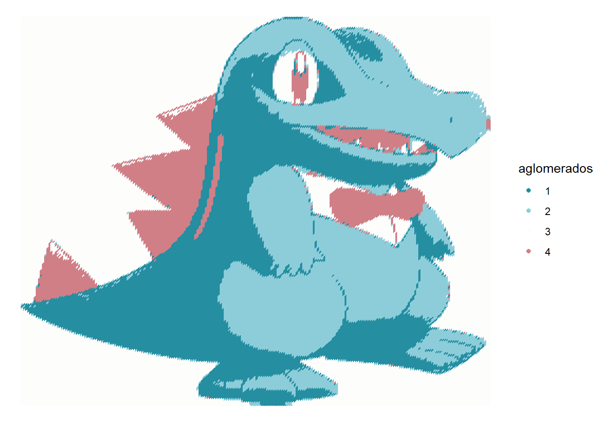
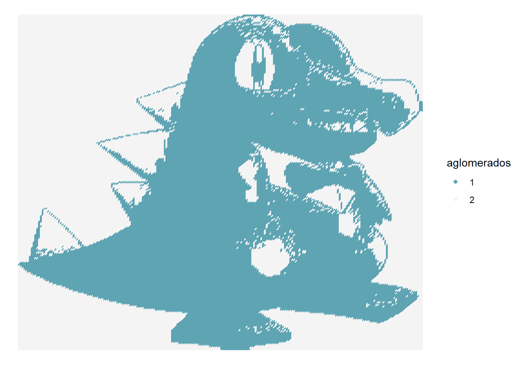
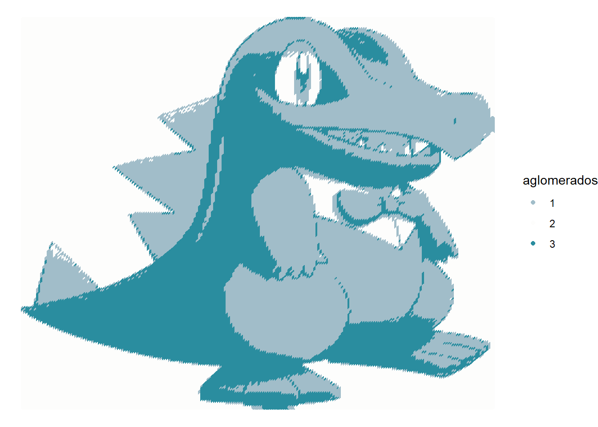
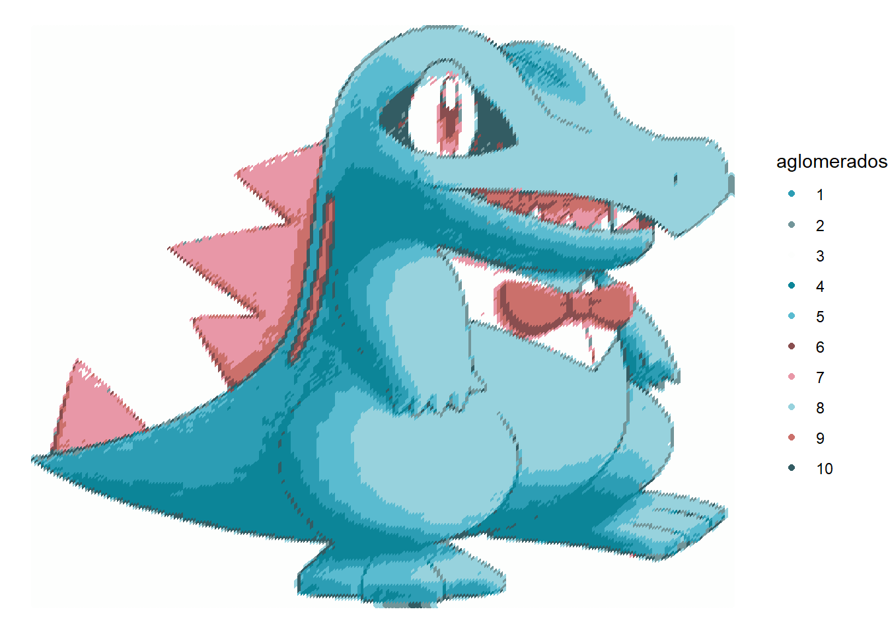

library(jpeg)
library(ggplot2)Análise de Cores em Imagens com K-means
Introdução
Neste projeto, exploraremos o algoritmo K-means para agrupar cores em uma imagem e visualizar os resultados em um gráfico de dispersão colorido.
Objetivo
O objetivo principal deste projeto é demonstrar como o algoritmo K-means pode ser utilizado para analisar a distribuição de cores em imagens. Ao agrupar cores em clusters e visualizar os resultados em um gráfico, podemos obter insights valiosos sobre a composição cromática da imagem e identificar padrões interessantes. Além disso, discutiremos as aplicações do K-means em diferentes áreas, como segmentação de imagens, compressão de imagens e análise de estilo artístico.
Importação de Bibliotecas
Importamos as bibliotecas jpeg e ggplot2. A biblioteca jpeg é utilizada para ler e escrever imagens JPEG, enquanto a biblioteca ggplot2 é utilizada para criar visualizações de dados, como o gráfico de dispersão que apresentaremos posteriormente.
Leitura e análise da Imagem
Agora utilizamos a função readJPEG() para ler a imagem JPEG armazenada no caminho inserido como argumento na função. A variável imagem armazena a representação da imagem na forma de um array tridimensional.
imagem <- readJPEG("C:/Users/ferna/Downloads/PokemonJpeg.jpg")Após a leitura da imagem analisamos sua estrutura usando a função str, e assim conseguimos obter as dimensões da imagem que são mostradas como os dois primeiros arrays, que neste caso é de 228x221.
str(imagem) num [1:228, 1:221, 1:3] 1 1 1 1 1 1 1 1 1 1 ...Extração dos Canais de Cores
Extraímos os valores dos canais de cores vermelho, verde e azul da imagem e os armazenamos nos vetores R, G e B, respectivamente. O array imagem representa a nossa imagem, onde cada dimensão tem um significado: Dimensão 1: Linhas da imagem (altura). No exemplo, 228 linhas. Dimensão 2: Colunas da imagem (largura). No exemplo, 221 colunas. Dimensão 3: Canais de cores (R, G e B). Cada pixel possui 3 valores: vermelho, verde e azul. Logo cada junção de valores de linha e coluna representam um pixel com seus respectivos valores RGB
R <- as.vector(imagem[,,1])
G <- as.vector(imagem[,,2])
B <- as.vector(imagem[,,3])Criação das Coordenadas dos Pixels
Para criar o conjunto de dados que será utilizado posteriormente, precisamos definir as coordenadas x e y de cada pixel na imagem. As funções rep() são utilizadas para gerar vetores que contêm as coordenadas de cada pixel, levando em consideração as dimensões da imagem (228x221).
x <- rep(1:221, each = 228)
y <- rep(228:1, times = 221)Criando o Conjunto de Dados
Combinamos as coordenadas dos pixels (x e y) com os valores dos canais de cores (R, G e B) em um único conjunto de dados chamado dados. Este conjunto de dados contém cinco colunas: x, y, R, G e B, onde cada linha representa um pixel na imagem.
dados <- data.frame(x,y,R,G,B)Agrupamento de Cores com K-means e sua lógica
O algoritmo K-means, também conhecido como agrupamento em k-médias, é uma técnica de aprendizado não supervisionado utilizada para agrupar dados em diferentes clusters. No contexto de análise de imagens, o K-means pode ser aplicado para agrupar pixels com cores semelhantes, revelando as cores dominantes e a distribuição cromática da imagem.
Funcionamento Básico:
Definição do Número de Clusters (k): O primeiro passo é definir o número de clusters (k) que serão utilizados para agrupar os dados, neste caso k = 4. Esse número representa a quantidade de grupos distintos que o algoritmo irá identificar.
Iniciação Aleatória de Centroides: Na iniciação aleatória, o K-means seleciona aleatoriamente k pontos do conjunto de dados como centroides iniciais para cada cluster. Esses centroides representam os centros dos grupos que serão formados.
Atribuição de Pontos aos Clusters: Cada ponto do conjunto de dados é então atribuído ao cluster mais próximo do seu centroide, de acordo com uma medida de distância (como a distância euclidiana).
Recálculo dos Centroides: Após a atribuição inicial, os centroides de cada cluster são recalculados como a média dos pontos que foram agrupados naquele cluster.
Repetição das Etapas 3 e 4: As etapas 3 e 4 são repetidas até que os centroides converjam, ou seja, até que não mudem significativamente entre as iterações. Nesse ponto, o algoritmo considera que os clusters foram formados de forma estável.
Funcionamento do K-means na prática
Agora que entendemos como funciona este algoritmo, basta usarmos a função kmeans que recebe valores RGB e a quantidade de centroides que serão trabalhados
modelo <-kmeans(dados[,3:5], centers = 4)Com o modelo pronto basta usar o ggplot para criarmos um gráfico com a nossa nova imagem recolorida
dados$aglomerados <- factor(modelo$cluster)
ggplot(data = dados, aes(x,y, col = aglomerados))+
scale_color_manual(values = rgb(modelo$centers))+
geom_point()+
theme_void()
Demonstrações com diferentes quantidades de centroides
Imagem com 2 centroides

Imagem com 3 centroides

Imagem com 10 centroides
